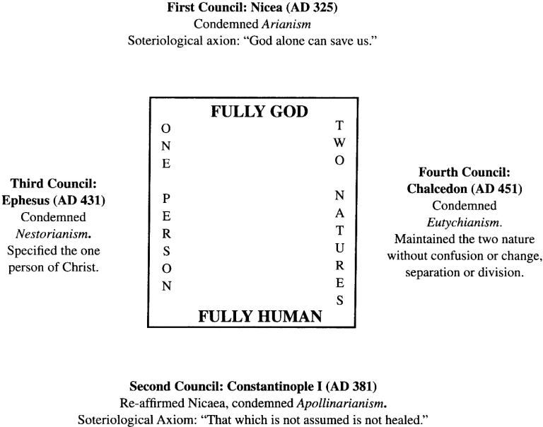

耶稣基督的神人二性


左图：耶稣的诞生
右图：登山变像
复习 - 耶稣基督的神性
神的属性
- 无所不在(马太福音 18:20) 因为无论在哪里，有两三个人奉我的名聚会，那里就有我在他们中间。
- 无所不能(创世记18:14) 耶和华岂有难成的事吗？到了日期，明年这时候，我必回到你这里，撒拉必生一个儿子。
- 无所不知（约翰福音 2：24-25） 耶稣却不将自己交托他们，因为他知道万人， 25 也用不着谁见证人怎样，因他知道人心里所存的。
- 永恒(约翰福音 1：1-2)
- 公义（以斯拉记9:15） 耶和华以色列的神啊，因你是公义的，我们这剩下的人才得逃脱，正如今日的光景。看哪，我们在你面前有罪恶，因此无人在你面前站立得住。”
- 慈爱（约翰一书4:7-8） 亲爱的弟兄啊，我们应当彼此相爱，因为爱是从神来的。凡有爱心的，都是由神而生，并且认识神。 8 没有爱心的，就不认识神，因为神就是爱。
- 圣洁（以赛亚6） 彼此呼喊说：“圣哉，圣哉，圣哉，万军之耶和华！他的荣光充满全地！”
复习 - 耶稣基督的神性
神的工作
- 创造（万物是借着祂造的。凡被造的，没有一样不是藉着祂造的。祂在世界，世界也是藉着祂造的，世界却不认识祂。 约翰福音 1：3，10)
- 护理（约翰福音 3：35） 父爱子，已将万有交在他手里。
- 赦免罪(马可福音 2：10a) 但要叫你们知道，人子在地上有赦罪的权柄。
- 保守圣徒(约翰福音 10：28) 我又赐给他们永生；他们永不灭亡，谁也不能从我手里把他们夺去 。
- 死里复活和末日审判(约翰福音 5：21-22) 父怎样叫死人起来，使他们活着，子也照样随自己的意思使人活着。父不审判什么人，乃将审判的事全交与子
复习 - 耶稣基督的人性
- 是生出的，拥有人的身体和灵魂
- 成长
- 经历痛苦、忧伤、疲倦
- 死亡、被埋葬
问题讨论
- 这经文如何显明耶稣的神人二性
路加福音 8：22-25 有一天耶稣和门徒上了船，对门徒说：“我们可以渡到湖那边去。” 他们就开了船。正行的时候，耶稣睡着了。湖上忽然起了暴风，船将满了水，甚是危险。门徒来叫醒了祂，说：“夫子，夫子，我们丧命啦。”耶稣醒了，斥责那狂风大浪。风浪就止住，平静了。耶稣对他们说，你们的信心在哪里呢？他们又惧怕，又希奇，彼此说：“这到底是谁？祂吩咐风和水，连风和水也听从祂了。”
神人二性的概念
耶稣基督一直带着他的神性，并在2000年前从童女马利亚取得他的人性
同时他是完全无原罪的，也不能犯罪
威斯敏斯特信条第8章:上帝的儿子，三一上帝的第二位格，既是真实和永恒的上帝，与父同质同等，当日期满足的时候，就取了人性及其诸般基本的禀赋和共有的软弱， 只是没有罪；所以，祂因着圣灵的权能，在童贞女马利亚腹中成孕，从她取了人性 。
神人二性的概念
- 神只有一个单独的位格(person)，但拥有神性和人性的本质属性(nature)
- 神性一直是神性，人性也一直是人性；但是基督只有一个位格，不是两个。
- 这两大属性密切地结合在一个位格之内，不分开却又不混乱.
- 神人二性的概念是基督教的核心信仰
比利时信条十九章
尽管由于复活，基督把不朽 性给与了人性，但衪并未改变祂人性的真实性，而且我们的救恩与复活也要依 靠祂的肉身的真实性。 但是，这两大属性是如此密切地结合在一个位格之内，即使祂的受死也没 有把二者分开。因此，当祂濒临死亡的时候交托在祂父手中的乃是真实的即将 离开属人的灵魂，离开祂的身体。
海德堡要理问答：48问

问：但如果基督的人性不是在神性所到之处，这岂不是将他的两种性情彼此分开了吗？
答：绝非如此！因为祂 的神性是不受限制、无处不在的。因此，祂的神性必然是超乎祂所取的人性，却又在人性之内，并且仍与之联合。
历史上对于基督神人二性的错误教导
对耶稣神人二性的混淆
- 否定耶稣的神性（耶和华见证人）
- 否定耶稣的人性（诺斯底）
- 否定耶稣的人性和神性(亚流)
对耶稣神性与人性的统一性(hypostatic union)之混淆
- 否定基督的二性连于一个位格（Nestorius）
- 否定基督的二性的区别（Eutyches）
迦克墩公会议(451)
基督的神人二性
- 不能分开，不能离散。
- 不相混乱，不相交换。
经文背诵
歌罗西书2章
8 你们要谨慎，恐怕有人用他的理学和虚空的妄言，不照着基督，乃照人间的遗传和世上的小学，就把你们掳去。 9 因为神本性一切的丰盛，都有形有体地居住在基督里面；